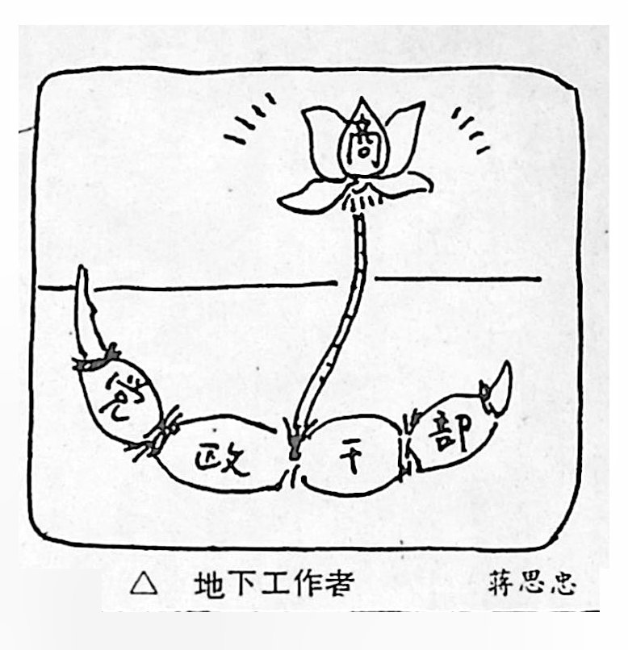

蒋思忠 《人事》1988年第12期（总第39期），封三
地下工作者
Underground Workers
- Text in the drawing
- 商 / 党 政 干 部
Business / Party, government, cadres - Description
- Above ground a flower labeled “business” blooms; underground, its root feeds on a chain of tubers labeled “Party,” “government” and “cadres.”
- Note
- 地下工作者, “underground workers,” was the honoured name for Communist agents in enemy territory before 1949. Party and government cadres were forbidden to run businesses but often did so through proxies — a major issue in 1988.
- Artist
- Jiang Sizhong 蒋思忠
- Published in
- 《人事》1988年第12期（总第39期）, inside back cover
- Themes
- Privilege · Reform and its implementation

Cite
Jiang Sizhong, “地下工作者” [Underground Workers], Renshi (Personnel) 《人事》, 1988, no. 12, inside back cover.